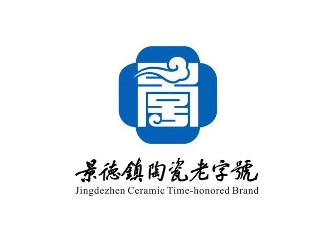

江西景德镇陶瓷
地理标志
地域保护范围
景德镇瓷器原产地域范围以江西省景德镇市人民政府《关于界定景德镇瓷器原产地域产品保护范围的函》提出的地域范围为准，为江西省景德镇市珠山区、昌江区、乐平市、浮梁县所辖行政区域。
查看详细介绍
专用标志使用

在景德镇瓷器原产地域范围内的生产者，如使用“原产地域产品专用标志”，须向设在当地质量技术监督局的景德镇瓷器原产地域产品保护申报机构提出申请，经初审合格，由国家质检总局公告批准后，方可使用景德镇瓷器“原产地域产品专用标志”。